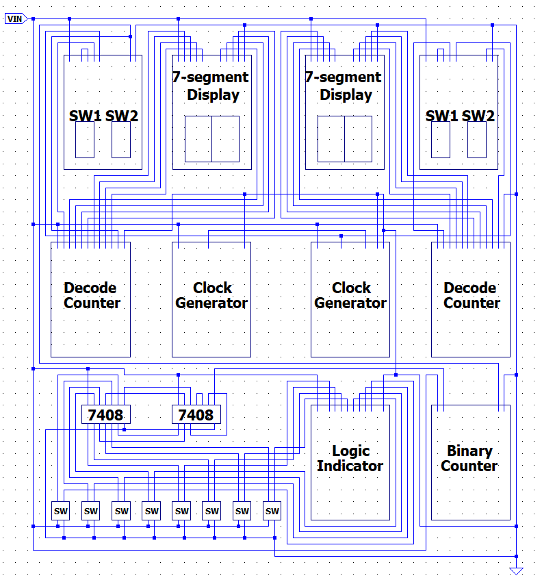
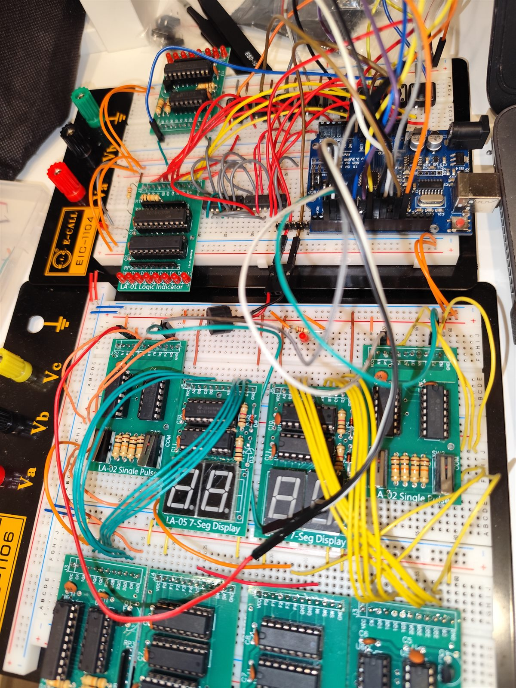

Arduino Electronic Piano
A hands-on embedded system project developed for the Electronics Engineering Laboratory. This project demonstrates the integration of hardware interrupts, frequency-to-tone mapping, and basic memory storage.
Hardware Design

Figure 1: Circuit Schematic (I/O Mapping)

Figure 2: Final Assembled Prototype
Functionality Demo
Demonstrating real-time play and record/playback features.
Debugging & Design Lessons
- Stable button inputs: Floating digital inputs caused unstable button readings. I added pull-down resistors to give each input a defined idle state.
- Recording and playback: Conflicting background tasks interrupted the buzzer output. I adjusted execution priority to improve transitions between recording and playback.